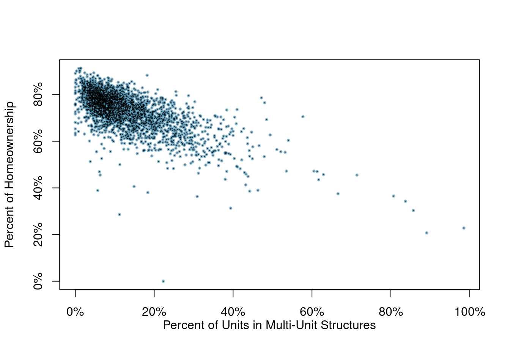

install.packages("openintro")
library(openintro)2 Data Basics
2.1 Objectives
Differentiate between various statistical terminologies such as case, observational unit, variables, data frame, tidy data, numerical variable, discrete numeric variable, continuous numeric variable, categorical variable, levels, scatterplot, associated variables, and independent, and construct examples to demonstrate their proper use in context.
Within a given dataset, evaluate different types of variables and justify their classifications (e.g. categorical, discrete numerical, continuous numerical).
Given a study description, develop an appropriate research question and justify the organization of data as tidy.
Create and interpret scatterplots using
Rto analyze the relationship between two numerical variables by evaluating the strength and direction of the association.
2.2 Data basics
Effective presentation and description of data is a first step in most analyses. This chapter introduces one structure for organizing data, as well as some terminology that will be used throughout this book.
2.2.1 Observations, variables, and data matrices
For reference we will be using a data set concerning 50 emails received in 2012. These observations will be referred to as the email50 data set, and they are a random sample from a larger data set. This data is in the openintro package so let’s install and then load this package.
Table 2.1 shows 4 rows of the email50 data set and we have elected to only list 5 variables for ease of observation.
Each row in the table represents a single email or case. A case is also sometimes called a unit of observation or an observational unit. The columns represent variables, which represent characteristics for each of the cases (emails). For example, the first row represents email 1, which is not spam, contains 21,705 characters, 551 line breaks, is written in HTML format, and contains only small numbers.
| spam | num_char | line_breaks | format | number |
|---|---|---|---|---|
| 0 | 21.705 | 551 | 1 | small |
| 0 | 7.011 | 183 | 1 | big |
| 1 | 0.631 | 28 | 0 | none |
| 0 | 15.829 | 242 | 1 | small |
Let’s look at the first 10 rows of data from email50 using R. Remember to ask the two questions:
What do we want R to do? and
What must we give R for it to do this?
We want the first 10 rows so we use head() and R needs the data object and the number of rows. The data object is called email50 and is accessible once the openintro package is loaded.
head(email50, n = 10)# A tibble: 10 × 21
spam to_multiple from cc sent_email time image attach
<fct> <fct> <fct> <int> <fct> <dttm> <dbl> <dbl>
1 0 0 1 0 1 2012-01-04 13:19:16 0 0
2 0 0 1 0 0 2012-02-16 20:10:06 0 0
3 1 0 1 4 0 2012-01-04 15:36:23 0 2
4 0 0 1 0 0 2012-01-04 17:49:52 0 0
5 0 0 1 0 0 2012-01-27 09:34:45 0 0
6 0 0 1 0 0 2012-01-17 17:31:57 0 0
7 0 0 1 0 0 2012-03-18 04:18:55 0 0
8 0 0 1 0 1 2012-03-31 13:58:56 0 0
9 0 0 1 1 1 2012-01-11 01:57:54 0 0
10 0 0 1 0 0 2012-01-07 19:29:16 0 0
# ℹ 13 more variables: dollar <dbl>, winner <fct>, inherit <dbl>, viagra <dbl>,
# password <dbl>, num_char <dbl>, line_breaks <int>, format <fct>,
# re_subj <fct>, exclaim_subj <dbl>, urgent_subj <fct>, exclaim_mess <dbl>,
# number <fct>In practice, it is especially important to ask clarifying questions to ensure important aspects of the data are understood. For instance, it is always important to be sure we know what each variable means and the units of measurement. Descriptions of all variables in the email50 data set are given in its documentation which can be accessed in R by using the ? command:
?email50(Note that not all data sets will have associated documentation; the authors of openintro package included this documentation with the email50 data set contained in the package.)
The data in email50 represent a data matrix, or in R terminology a data frame or tibble 1, which is a common way to organize data. Each row of a data matrix corresponds to a unique case, and each column corresponds to a variable. This is called tidy data.2 The data frame for the stroke study introduced in the previous chapter had patients as the cases and there were three variables recorded for each patient. If we are thinking of patients as the unit of observation, then this data is tidy.
# A tibble: 10 × 3
group outcome30 outcome365
<chr> <chr> <chr>
1 control no_event no_event
2 trmt no_event no_event
3 control no_event no_event
4 trmt no_event no_event
5 trmt no_event no_event
6 control no_event no_event
7 trmt no_event no_event
8 control no_event no_event
9 control no_event no_event
10 control no_event no_event If we think of an outcome as a unit of observation, then it is not tidy since the two outcome columns are variable values (month or year). The tidy data for this case would be:
# A tibble: 10 × 4
patient_id group time result
<int> <chr> <chr> <chr>
1 1 control month no_event
2 1 control year no_event
3 2 trmt month no_event
4 2 trmt year no_event
5 3 control month no_event
6 3 control year no_event
7 4 trmt month no_event
8 4 trmt year no_event
9 5 trmt month no_event
10 5 trmt year no_eventThere are three interrelated rules which make a data set tidy:
- Each variable must have its own column.
- Each observation must have its own row.
- Each value must have its own cell.
Why ensure that your data is tidy? There are two main advantages:
There’s a general advantage to picking one consistent way of storing data. If you have a consistent data structure, it’s easier to learn the tools that work with it because they have an underlying uniformity.
There’s a specific advantage to placing variables in columns because it allows
R’s vectorized nature to shine. This will be more clear as we progress in our studies. Since most built-inRfunctions work with vectors of values, it makes transforming tidy data feel particularly natural.
Data frames are a convenient way to record and store data. If another individual or case is added to the data set, an additional row can be easily added. Similarly, another column can be added for a new variable.
Exercise:
We consider a publicly available data set that summarizes information about the 3,142 counties in the United States, and we create a data set calledcounty_subsetdata set. This data set will include information about each county: its name, the state where it resides, its population in 2000 and 2010, per capita federal spending, poverty rate, and four additional characteristics. We create this data object in the code following this description. The parent data set is part of theusdatalibrary and is calledcounty_complete. The variables are summarized in the help menu built into the usdata package3. How might these data be organized in a data matrix? 4
Using R we will create our data object. First we load the library usdata.
library(usdata)We only want a subset of the columns and we will use the select verb in dplyr to select and rename columns. We also create a new variable which is federal spending per capita using the mutate function.
county_subset <- county_complete %>%
select(name, state, pop2000, pop2010, fed_spend = fed_spending_2009,
poverty = poverty_2010, homeownership = homeownership_2010,
multi_unit = housing_multi_unit_2010, income = per_capita_income_2010,
med_income = median_household_income_2010) %>%
mutate(fed_spend = fed_spend / pop2010)Using R, we will display seven rows of the county_subset data frame.
head(county_subset, n = 7) name state pop2000 pop2010 fed_spend poverty homeownership
1 Autauga County Alabama 43671 54571 6.068095 10.6 77.5
2 Baldwin County Alabama 140415 182265 6.139862 12.2 76.7
3 Barbour County Alabama 29038 27457 8.752158 25.0 68.0
4 Bibb County Alabama 20826 22915 7.122016 12.6 82.9
5 Blount County Alabama 51024 57322 5.130910 13.4 82.0
6 Bullock County Alabama 11714 10914 9.973062 25.3 76.9
7 Butler County Alabama 21399 20947 9.311835 25.0 69.0
multi_unit income med_income
1 7.2 24568 53255
2 22.6 26469 50147
3 11.1 15875 33219
4 6.6 19918 41770
5 3.7 21070 45549
6 9.9 20289 31602
7 13.7 16916 306592.2.2 Types of variables
Examine the fed_spend, pop2010, and state variables in the county data set. Each of these variables is inherently different from the others, yet many of them share certain characteristics.
First consider fed_spend. It is said to be a numerical variable (sometimes called a quantitative variable) since it can take a wide range of numerical values, and it is sensible to add, subtract, or take averages with those values. On the other hand, we would not classify a variable reporting telephone area codes as numerical; even though area codes are made up of numerical digits, their average, sum, and difference have no clear meaning.
The pop2010 variable is also numerical; it is sensible to add, subtract, or take averages with those values, although it seems to be a little different than fed_spend. This variable of the population count can only be a whole non-negative number (\(0\), \(1\), \(2\), \(...\)). For this reason, the population variable is said to be discrete since it can only take specific numerical values. On the other hand, the federal spending variable is said to be continuous because it can take on any value in some interval. Now technically, there are no truly continuous numerical variables since all measurements are finite up to some level of accuracy or measurement precision (e.g., we typically measure federal spending in dollars and cents). However, in this book, we will treat both types of numerical variables the same, that is as continuous variables for statistical modeling. The only place this will be different in this book is in probability models, which we will see in the probability modeling block.
The variable state can take up to 51 values, after accounting for Washington, DC, and are summarized as: Alabama, Alaska, …, and Wyoming. Because the responses themselves are categories, state is a categorical variable (sometimes also called a qualitative variable), and the possible values are called the variable’s levels.
Finally, consider a hypothetical variable on education, which describes the highest level of education completed and takes on one of the values noHS, HS, College or Graduate_school. This variable seems to be a hybrid: it is a categorical variable but the levels have a natural ordering. A variable with these properties is called an ordinal variable. A categorical variable with levels that do not have a natural ordering is called a nominal variable. To simplify analyses, any ordinal variables in this book will be treated as nominal categorical variables. In R, categorical variables can be treated in different ways; one of the key differences is that we can leave them as character values (character strings, or text) or as factors. A factor is essentially a categorical variable with defined levels. When R handles factors, it is only concerned about the levels of the factors. We will learn more about this as we progress.
Figure 2.1 captures this classification of variables we have described.
Exercise:
Data were collected about students in a statistics course. Three variables were recorded for each student: number of siblings, student height, and whether the student had previously taken a statistics course. Classify each of the variables as continuous numerical, discrete numerical, or categorical.5
Exercise:
Consider the variablesgroupandoutcome30from the stent study in the case study chapter. Are these numerical or categorical variables? 6
2.2.3 Relationships between variables
Many analyses are motivated by a researcher looking for a relationship between two or more variables. This is the heart of statistical modeling. A social scientist may like to answer some of the following questions:
- Is federal spending, on average, higher or lower in counties with high rates of poverty?
- If homeownership is lower than the national average in one county, will the percent of multi-unit structures in that county likely be above or below the national average?
These are what statisticians refer to as research questions, specific and measurable questions that guide the data collection and analysis process. To answer these questions, data must be collected, such as the county_complete data set. Examining summary statistics could provide insights for each of the two questions about counties. Graphs can be used to visually summarize data and are useful for answering such questions as well.
Scatterplots are one type of graph used to study the relationship between two numerical variables. Figure 2.2 compares the variables fed_spend and poverty. Each point on the plot represents a single county. For instance, the highlighted dot corresponds to County 1088 in the county_subset data set: Owsley County, Kentucky, which had a poverty rate of 41.5% and federal spending of $21.50 per capita. The dense cloud in the scatterplot suggests a relationship between the two variables: counties with a high poverty rate also tend to have slightly more federal spending. We might brainstorm as to why this relationship exists and investigate each idea to determine which is the most reasonable explanation.
Exercise:
Examine the variables in theemail50data set. Create two research questions about the relationships between these variables that are of interest to you.7
The fed_spend and poverty variables are said to be associated because the plot shows a discernible pattern. When two variables show some connection with one another, they are called associated variables. Associated variables can also be called dependent variables and vice-versa.
Example:
The relationship between the homeownership rate and the percent of units in multi-unit structures (e.g. apartments, condos) is visualized using a scatterplot in Figure 2.3. Are these variables associated?
It appears that the larger the fraction of units in multi-unit structures, the lower the homeownership rate. Since there is some relationship between the variables, they are associated.

Because there is a downward trend in Figure 2.3 – counties with more units in multi-unit structures are associated with lower homeownership – these variables are said to be negatively associated. A positive association (upward trend) is shown in the relationship between the poverty and fed_spend variables represented in Figure 2.2, where counties with higher poverty rates tend to receive more federal spending per capita.
If two variables are not associated, then they are said to be independent. That is, two variables are independent if there is no evident relationship between the two.
A pair of variables are either related in some way (associated) or not (independent). No pair of variables is both associated and independent.
2.2.4 Creating a scatterplot
In this section, we will create a simple scatterplot and then ask you to create one on your own. First, we will recreate the scatterplot seen in Figure 2.2. This figure uses the county_subset data set.
Here are two questions:
What do we want R to do? and
What must we give R for it to do this?
We want R to create a scatterplot and to do this it needs, at a minimum, the data object, what we want on the \(x\)-axis, and what we want on the \(y\)-axis. More information on ggformula can be found here.
county_subset %>%
gf_point(fed_spend ~ poverty)Figure 2.4 is bad. There are poor axis labels, no title, dense clustering of points, and the \(y\)-axis is being driven by a couple of extreme points. We will need to clear this up. Again, try to read the code and use help() or ? to determine the purpose of each command in Figure 2.5.
county_subset %>%
filter(fed_spend < 32) %>%
gf_point(fed_spend ~ poverty,
xlab = "Poverty Rate (Percent)",
ylab = "Federal Spending Per Capita",
title = "A scatterplot showing fed_spend against poverty",
cex = 1, alpha = 0.2) %>%
gf_theme(theme_classic())Exercise:
Create the scatterplot in Figure 2.3.
A tibble is a data frame with attributes for such things as better display and printing.↩︎
Tidy data is data in which each row corresponds to a unique case and each column represents a single variable. For more information on tidy data, see the Simply Statistics blog and the R for Data Science book by Hadley Wickham and Garrett Grolemund.↩︎
Each county may be viewed as a case, and there are ten pieces of information recorded for each case. A table with 3,142 rows and 10 columns could hold these data, where each row represents a county and each column represents a particular piece of information.↩︎
The number of siblings and student height represent numerical variables. Because the number of siblings is a count, it is discrete. Height varies continuously, so it is a continuous numerical variable. The last variable classifies students into two categories – those who have and those who have not taken a statistics course – which makes this variable categorical.↩︎
There are only two possible values for each variable, and in both cases they describe categories. Thus, each is a categorical variable.↩︎
Two sample questions: (1) Intuition suggests that if there are many line breaks in an email then there would also tend to be many characters: does this hold true? (2) Is there a connection between whether an email format is plain text (versus HTML) and whether it is a spam message?↩︎